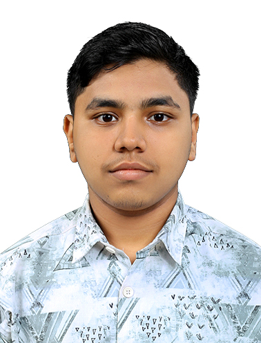

Muhammed Yaseen T K
Cybersecurity Student · Software & Hardware Builder
Profile
B.Tech CSE (Cyber Security) student exploring offensive security, Linux, security monitoring, and software development through authorized labs and hands-on projects. Seeking cybersecurity internships and student collaborations.
Education & training
B.Tech in Computer Science & Engineering (Cyber Security)Second year
KMCT Institute of Emerging Technology and Management
Affiliated to APJ Abdul Kalam Technological University (KTU)
Offenso Certified Security Professional (OCSP)In progress
Offenso Hackers Academy · Expected completion: November 2026
Selected projects & labs
DC-2 Penetration-Testing Lab / Completed
- Performed enumeration, investigated a restricted rbash shell, and audited sudo permissions in an authorized vulnerable-machine lab.
- Practiced Git-based privilege escalation to root and prepared a technical walkthrough report.
Windows Sysmon Investigation / Completed
- Investigated Practice-Sysmon.evtx with PowerShell and Event Viewer.
- Filtered event IDs 1, 3, 11, and 22 to examine processes, network connections, file creation, and DNS activity.
RFID-Activated Door Lock System / Completed
- Built an Arduino UNO prototype using an MFRC522 RFID reader, keypad PIN override, and servo lock.
- Integrated an I2C LCD, buzzer, and LEDs; programmed authentication logic in Arduino C/C++.
Akshaya@Doorstep / In progress
- Developing a PHP/MySQL service-centre application with role-based login, bookings, operator assignments, payment tracking, and audit logs.
Technical toolkit
Security & monitoring Kali Linux, Sysmon, Splunk, PowerShell, Windows Event Viewer
Programming & web C, C++, Python, HTML, CSS, JavaScript, PHP, MySQL
Platforms & tools Windows, Ubuntu, VMware, WSL, Git, GitHub, VS Code
Mobile & hardware Flutter, Firebase, Arduino UNO, MFRC522